上一篇博客讲到了游戏的策划，既然策划清楚了那剩下的就是美工和写代码了。这篇博客距上篇已经10天，为什么会隔这么长时间呢？除了时间限制（我在业余时间开发）外，主要还是在开发过程中遇到了各种困难。好在，目前这些困难都被一一攻破啦。
下面用到的所有图片和代码都可以在我的GitHub找到。
目标
我们今天的目标是：
- 生成游戏场景
游戏图片
说到美工，其实就是游戏图片和游戏场景。
游戏图片包括游戏里能看得见的所有图，比如我们小时候玩的超级玛丽，就包括很多图：
- 呆帽子的Mario
- Mario用头去顶的带问号的箱子
- Mario喜欢钻的水管
- 各种背景图片：云、山、树丛
- 等等
游戏场景也就是你在手机屏幕上看到的游戏的整个样子。把所有的图片摆放到计划的地方就组成了场景，然后让我们的Player在场景里尽情的打怪和收金币。
游戏图片从哪里来呢？如果你是美术科班出身，当然可以自己画游戏图片。对我们非科班人来说，有两个办法：买有版权的图片，或者用免费图片。估计我会把这个游戏做成免费版，那还是用免费图片吧。
本游戏的图片都是从Open Game Art网站获取的，感谢图片作者Kenney的无私奉献。在Open Game Art获取图片的时候要注意检查图片的License, 是如下的CC0才能免费使用。
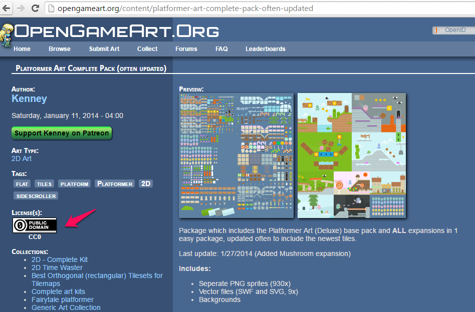
游戏场景
下图是我们最终要完成的场景。本游戏是水平方向不停奔跑类型的，所以这里只能展现场景的开头部分，剩下的部分在Player不停奔跑过程中就会逐渐展现出来。
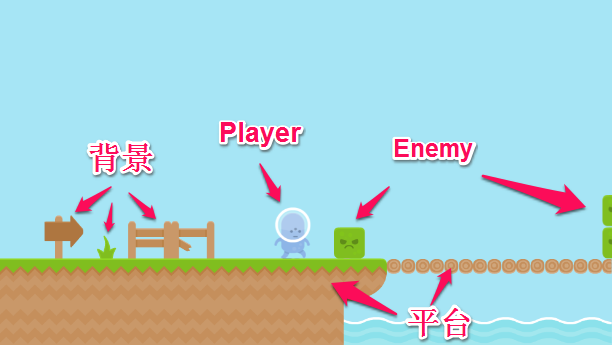
如上图所示，可以把场景里的图片分成三类：
平台（platform）。如上图的有草地的路和桥。Player将在平台上奔跑跳跃。Phaser里面的平台是有意义的，如果不是平台，Player站在草地上会往下“滑”，“穿越”草地最后掉入屏幕最下端消失掉。背景(background)。如上图的路牌、草和栏杆。它们纯粹是用来做装饰的背景图，Player穿过它们没有任何影响。精灵(sprite)。如上图戴头盔的Player，很凶的Enemy绿色石头。Phaser里它们被称为sprite（精灵）。正由于有精灵们的存在，游戏才变得生动活泼了。精灵们各司其职：Player要跳过Enemy尽早到达终点，Enemy想方设法绊倒Player让他重跑。
生成游戏场景，就是要把platform, background和精灵图片放到指定的地方。那么多的图片，怎么才能按我们的要求放在指定的位置呢？Tiled Map Editor这个免费工具就是答案。
Tiled Map Editor
大家可以点击这里下载和安装Tiled的Windows版本。
回到前面的问题，如何才能把图片放到指定的位置？游戏精英们在几十年前就找到了方案。如下图所示，把游戏场景划成一个个大小一样的小格子不就行了吗。所有图片的尺寸都和小格子一样大小，就像铺瓷砖一样把图片铺到划好的格子里，我们的游戏场景就出来了。
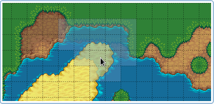
游戏界把这种图叫做瓦片地图（tile map）。Tile map的生成和使用步骤如下。
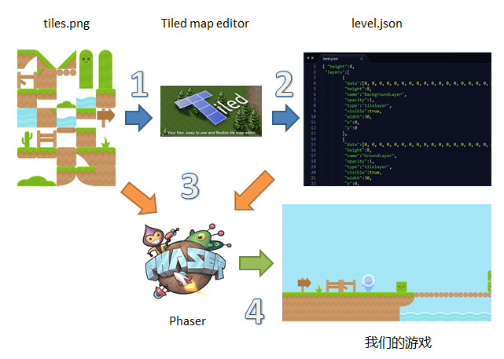
- 把所有图片tiles.png加载到Tiled,然后在Tiled里面把各图片放在指定的格子里，完成tile map。
- 把完成的tile map存成JSON格式的文件level.json。这个文件描述了
哪个图片放在哪个格子里。 - Phaser读取level.json和tiles.png图片到缓存中。
- Phaser把图片根据level.json里面规定的地方摆放到屏幕上，完成游戏场景的显示。
看到步骤1你可能就有疑问了，为什么是一个图片文件tiles.png,而不是每个图一个png文件？
其实多个图片文件或者一个图片文件都可以。游戏界要这么做是有道理的：一切都是为了性能。一个一个图片去读取肯定Disk I/O会花很长时间，于是他们想到了把大小相同图片们摆放到一个大图片里，在游戏程序里按偏移量就可以把想要的各个小图片读出来了。为此游戏界还给这种大图片取了个名字：sprite sheet。
设置Tile Map
现在让我们打开Tiled Map Editor。点击File->New… 就会出现如下的对话框。
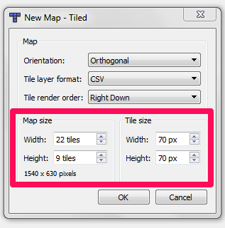
我们需要关心的是红框里的Map size(Tile Map图大小)和Tile size(每个瓦片的大小，也就是每个小图片的大小)。
我们的小图片都是70x70的。让我们把游戏设为宽22个瓦片，高9个瓦片。点击确认后，在编辑器的中间就会显示空的小格子，一共22x9=198个格子。
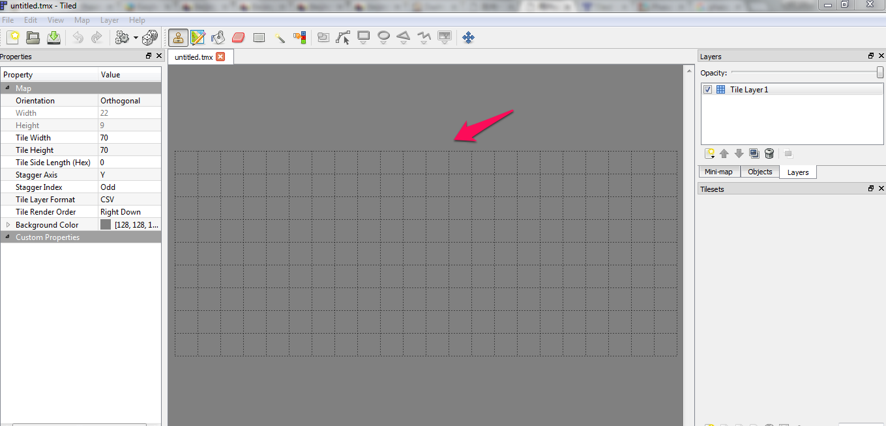
你可以在这里下载tiles.png。现在让我们把图片文件tiles.png加载到Tiled。
如下所示，点击那个带黄色星星的图标，在弹出的对话框里选择tiles.png，并确认Tile width/Tile height都是70 px，按Ok就会看见所有的tile图片都Tilesets里面了。
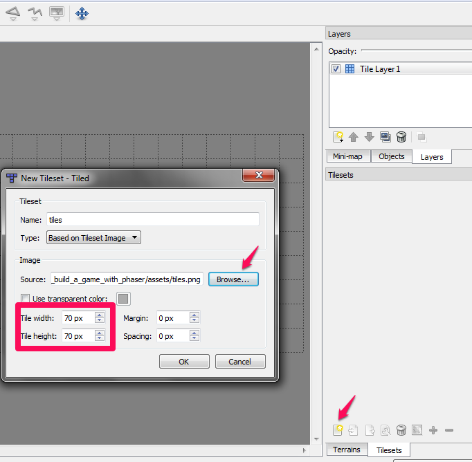
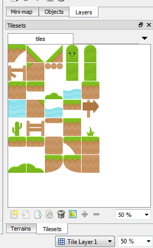
好了，到目前为止tile map已经设置完毕。先ctrl+s把Tiled项目保存为level.tmx，然后我们可以开始摆放图片了。
Tile Map的Layer
不是说放图片吗，怎么又来了什么Layer？Layer是什么?
Layer就是图层，会PS(PhotoShop)的同学应该很了解这个概念。在Tiled里，你可以创建多个图层。每个图层是独立的，你可以在各图层上摆放不同的图片。当然，在手机屏幕上你看到的是所有图层的图片叠加到一起的效果。
Tiled支持三种Layer
- Tile Layer
- Object Layer
- Image Layer
Image Layer通常用来放一张和大的背景图片。为了简化，这次我们直接用颜色做背景，就用不上Image Layer。
Tile Layer可以用来放tile图片。我们将用它来放平台（platform）的tile图片（有草地的路和桥），和一些简单的背景(background)图片（路牌、草、河水和栏杆）。
Object Layer用来放精灵(sprite)，也就是戴头盔的Player，很凶的Enemy绿色石头。
Tile Layer
现在点击Add Tile Layer，创建一个Tile Layer, 命名为BackgroundLayer。再次创建一个Tile Layer, 命名为GroundLayer。点击Add Object Layer， 创建ObjectLayer。最后结果如下：
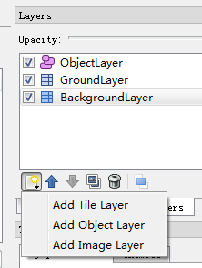
然后选中GroundLayer，在Tilesets里面任选tile图片来摆放在空的格子里。我做完的GroundLayer是这个样子的。Player在游戏里会在GroundLayer的路面上奔跑。
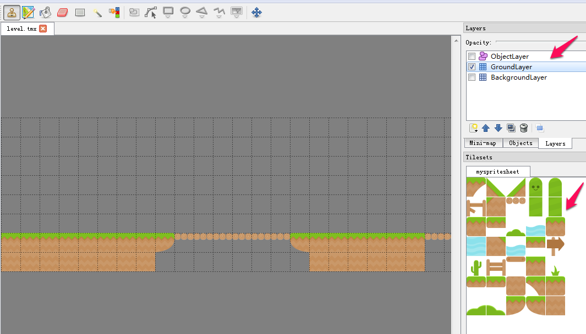
然后选中BackgroundLayer，把路牌、草、河水和栏杆随意放上去。
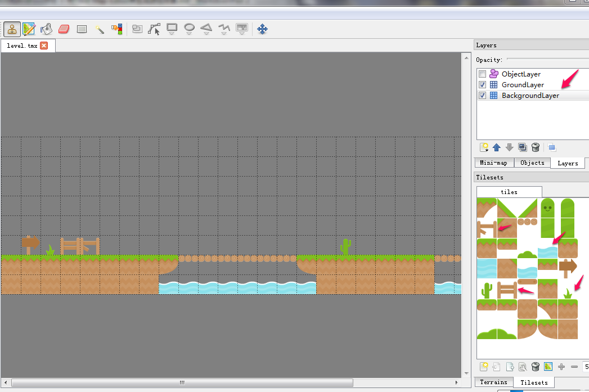
Object Layer
ObjectLayer是个很特殊的图层，放置的都是sprite。这里我们将会放入两种sprite:
- 很凶的Enemy
绿色石头和 - 一面用来标识终点的
旗帜。
Player也可以放在ObjectLayer里，不过这次我准备在代码里直接生成Player。
绿色石头和旗帜的图片不在tiles.png图片里，我们得单独处理一下。为什么不在tiles.png里面？因为tile.png小图片都是一样大小的(70x70)，而sprite则是各不相同。石头是51x51，旗帜是70x70,player是70x86。
能不能把大小不一样的图片也像sprite sheet那样放到一个大图片文件里来提高性能？答案是：可以。游戏界称这种大图为texture atlas。不过，今天我们还用不到texture atlas。我们直接用单个的图片文件，原因是：在Object Layer里面摆放的图片只是个占位符，用来标识sprite要摆放的地方（XY坐标值）。真正生成图形并显示出来需要我们写代码实现。
现在来把石头和旗帜的图片加载到Tiled里面。点击Map->New Tileset…,在弹出的对话框里设置name为enemies，Type选择Collection of Images。
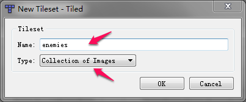
确认后，按加号把图片\assets\texture-atlas\blockerMad.png和assets\texture-atlas\flagYellow.png加入。
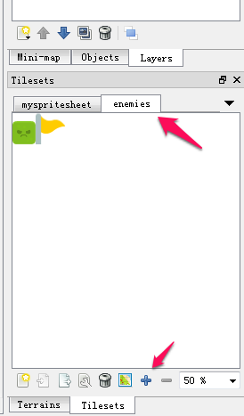
现在开始把石头和旗帜放入Obejct Layer。比较复杂，前4步是这样的：
- 在
Layers里选中ObjectLayer - 在工具栏选择
Insert Tile - 选择石头或者旗帜
- 把石头或者旗帜放入图层里
完成的结果如下。
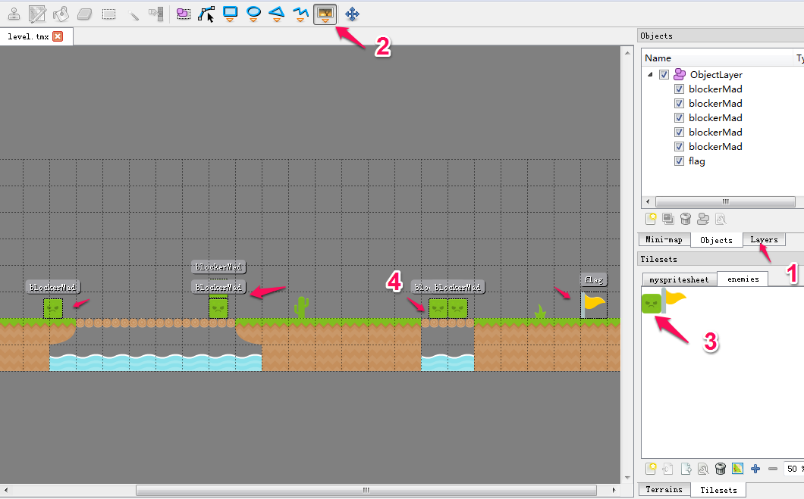
还没有完， 我们还需要给所有的object(sprite)取名字。这个名字在游戏代码里会用到。 总共有4个步骤要做：
- 选择
Objects。你会看到ObjectLayer下面有很多空的选择框 - 在工具栏选择
Select Objects - 选择一个sprite
- 双击给sprite一个名字。我们所有的石头都叫
blockerMad，旗帜叫flag
完成的结果如下。
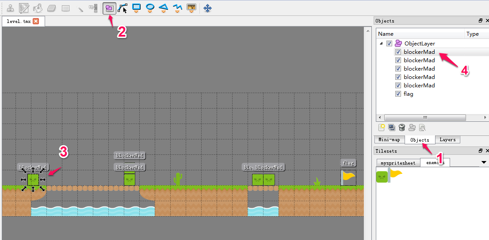
到此游戏场景已经画完。ctrl+s保存一下项目，然后我们准备来生成level.json文件。
level.json
点击File->Export As…,把文件命名为level.json就大功告成啦！
有了大图片文件tile.png加tile map文件level.json，我们就可以把漂亮的游戏场景搬上手机屏幕啦。已经很晚了，今天就到这里，下个博客介绍如何用Phaser来显示我们的游戏场景。